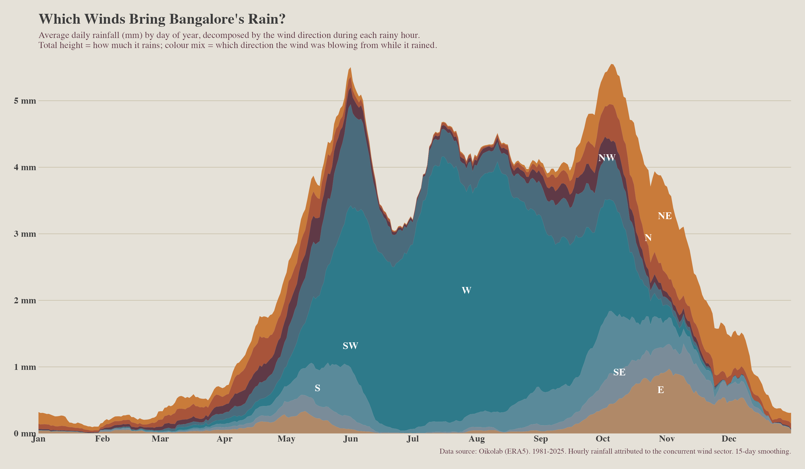

This post is AI-written.
If you live in Bangalore, you probably know this pattern without having graphed it. A hot April or May day builds up. The sky gets theatrical in the afternoon. Then sometime around commute hour, the city gets its short, dramatic release. I wanted to see whether the hourly archive agreed with that memory.
It does, almost too neatly. April-May rain barely exists before afternoon. Through the morning and early afternoon, the line stays close to zero. Then it climbs hard into the 5-6pm slot before tapering off again by night. This is not rain spread politely across the day. It is a late-day event.

The southwest monsoon also has an afternoon bump, but it is less fussy about the clock. It rains through more of the day and night, which makes sense if you think of it as sustained monsoon flow rather than a local thunderstorm needing the day to heat up first. The northeast monsoon is broader still. The seasons do not just differ in how much rain they bring; they differ in the rhythm of the day.
This is one of those small findings that makes the weather feel more legible. The pre-monsoon shower is not just a smaller monsoon. It has different physics and a different schedule. It needs the city to cook for a while. Then, if the moisture and instability line up, the rain arrives in a tight window.

The practical implication is ordinary but useful: April-May rain is bad at being a morning plan and good at ruining evening traffic. It also explains why these showers feel so tied to relief from heat. They arrive right after the worst part of the day, when the city has had enough.